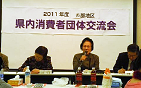
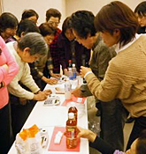

|
|
報告者：大嶋埼玉消団連事務局次長 集団的消費者被害救済制度に関しての消費者庁の動きを報告。調査のデータを基に、「市町村の住民一人当たり消費生活関連予算は、西部は比較的良いです。今後も消費生活担当課に足を運んでと共に消費者行政強化のために努力しましょう。 「地域で生き生きと活動するために・消費者団体の役割について」 志木市くらしの会 市と共に講演会・研修会を開催。また「アグリシップしき」という催しがあり、市役所のホールで地元の商店、農家の地産品の販売を手伝いながら、行政との「協力・協働」の関係を築いています。20年前から夏休み子ども消費者教室を開催しています。子ども会を通じて呼び掛け小学生20～30名が参加。焼きそばを振る舞い、交流もあります。防災協定を結んでいる長野県飯綱町に一泊交流。ジュース･はちみつ･味噌作りを頑張る女性の姿に刺激を受けました。同様に深谷市とも交流の予定です。志木市はごみの量が近隣都市より多く、これを減らすようエコなくらし方について消費生活展で提案。老若男女を問わずこれからも呼び掛けていきます。賢い消費者になるための学習と、新年会や一泊研修でのコミュニケーションも大切にしています。 お話の後、飲料の糖度測定をし、糖分を角砂糖で「見える化」しました。思いの外の量の多さに驚きの声と、糖度計を初めて目にした方から、いくらで手に入るか、資金はどうしているのかなど、質問もありました。傘布やネクタイのリサイクル作品も展示され、活動をまとめられたパネルと一緒に見せて頂きました。 4グループに分かれて活動交流・情報交換しました。 |